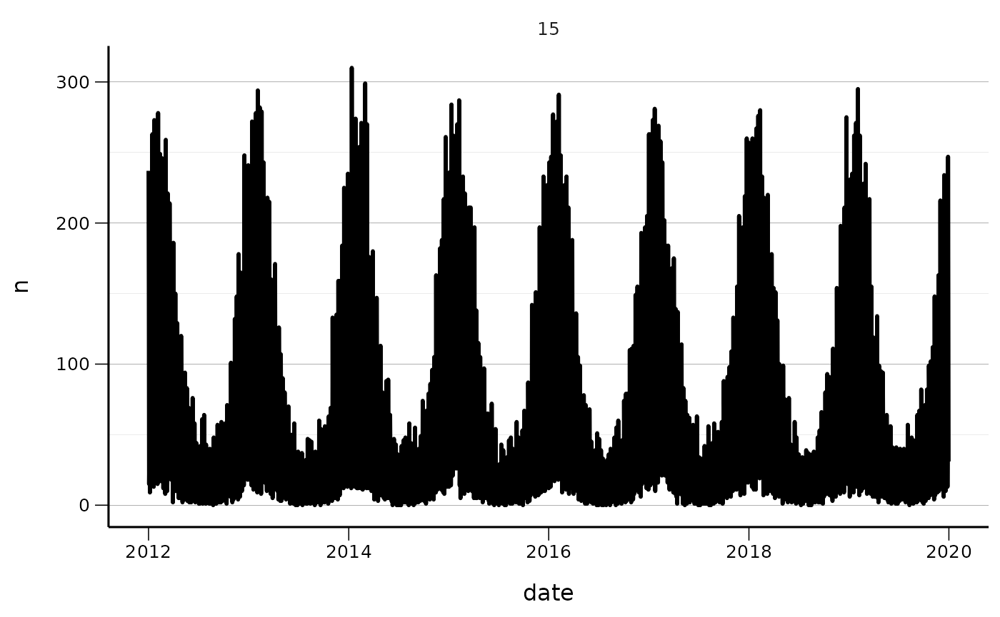
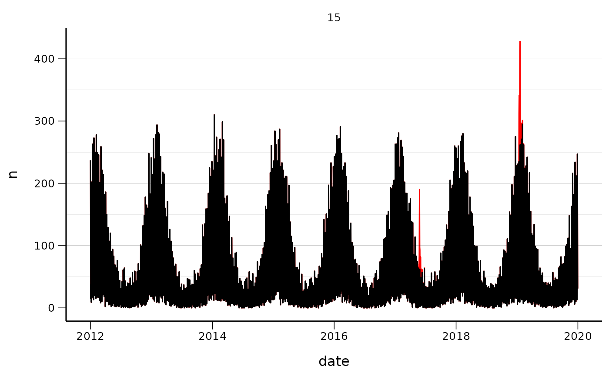
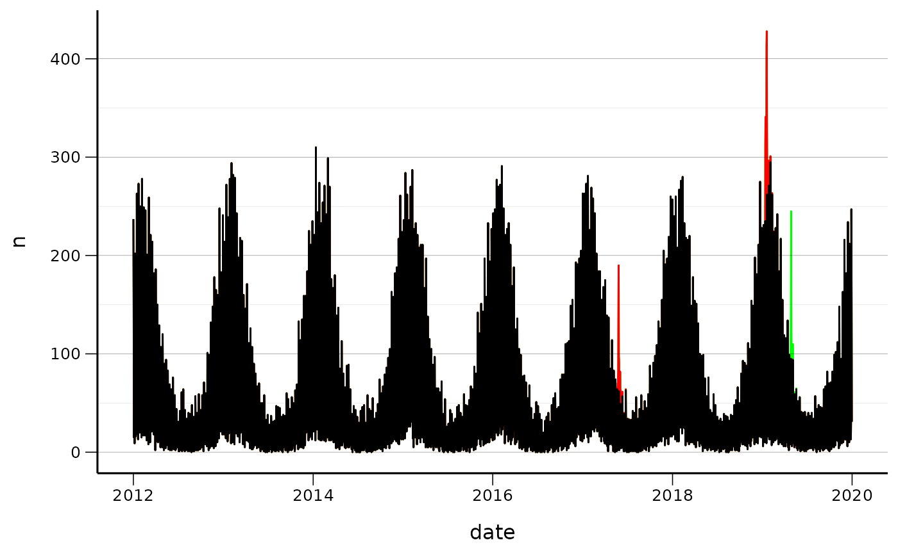
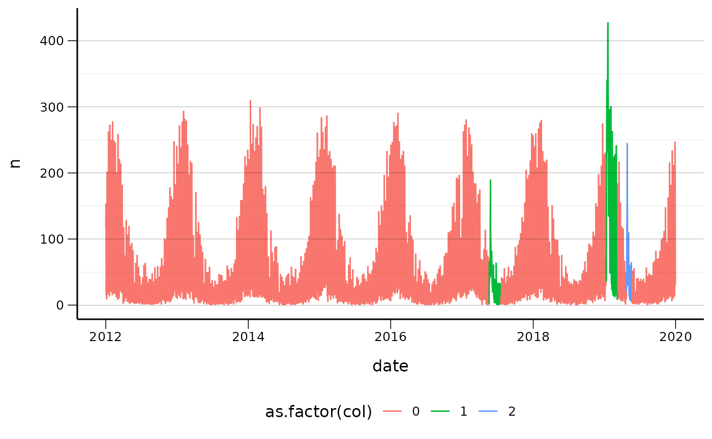

Baseline data simulation with seasonal and spike outbreaks
Beatriz Valcarcel
2022-04-20
Source:../vignettes/baseline_data_with_outbreaks_simulation.Rmd
baseline_data_with_outbreaks_simulation.Rmd
library(ggplot2)
library(data.table)
library(magrittr)
library(surveillance)
#> Loading required package: sp
#> Loading required package: xtable
#> This is surveillance 1.20.0. For overview type 'help(surveillance)'.
#>
#> Attaching package: 'surveillance'
#> The following object is masked from 'package:data.table':
#>
#> yearSimulation of baseline data
baseline <- splalert::simulate_baseline_data(
start_date = as.Date("2012-01-01"),
end_date = as.Date("2019-12-31"),
seasonal_pattern_n = 1,
weekly_pattern_n = 2,
alpha = 3,
beta = 0,
gamma_1 = 0.8,
gamma_2 = 0.6,
gamma_3 = 0.8,
gamma_4 = 0.4,
phi = 2,
shift_1 = 6
)
baseline[,s:=15]
q <- ggplot(baseline, aes(x = date, y = n))
q <- q + geom_line(lwd = 1)
q <- q + facet_wrap(~s, scales = "free")
q <- q + splstyle::scale_fill_fhi(palette = "contrast")
q <- q + splstyle::theme_fhi_lines_horizontal(legend_position = "bottom")
q
# q <- ggplot(baseline, aes(wday, n, group=wday))
# q <- q + facet_wrap(~s, scales = "free")
# q <- q + geom_boxplot()
# q
#
# q <- ggplot(baseline, aes(wday, n, group=calmonth))
# q <- q + facet_wrap(~s, scales = "free")
# q <- q + geom_boxplot()
# qAdd seasonal outbreaks
rm(baseline_with_seasonal)
#> Warning in rm(baseline_with_seasonal): object 'baseline_with_seasonal' not found
baseline_with_seasonal <- splalert::simulate_seasonal_outbreak_data (baseline,
week_season_start = 40,
week_season_peak = 4,
week_season_end = 20,
n_season_outbreak = 1,
m = 30)
#> NULL
#> [1] 2016 2018
q <- ggplot(baseline_with_seasonal, aes(x = date, y = n))
q <- q + geom_line(colour = "red")
q <- q + geom_line(data=baseline_with_seasonal, aes(x = date, y = n - seasonal_outbreak_n_rw ))
q <- q + facet_wrap(~s, scales = "free")
q <- q + splstyle::scale_fill_fhi(palette = "contrast")
q <- q + splstyle::theme_fhi_lines_horizontal(legend_position = "bottom")
q
Add spikeoutbreak
baseline_with_seasonal_spike <- splalert::simulate_spike_outbreak_data(baseline_with_seasonal,
n_sp_outbreak=1,
m = 15)
q <- ggplot(baseline_with_seasonal_spike, aes(x = date, y = n))
q <- q + geom_line(colour = "green")
q <- q + geom_line(data=baseline_with_seasonal, aes(x = date, y = n),colour = "red")
q <- q + geom_line(data=baseline, aes(x = date, y = n))
q <- q + splstyle::scale_fill_fhi(palette = "contrast")
q <- q + splstyle::theme_fhi_lines_horizontal(legend_position = "bottom")
q
Add holiday effect –>
baseline_with_seasonal_spike_holiday <- splalert::add_holiday_effect( baseline_with_seasonal_spike,
holiday_data= fhidata::norway_dates_holidays,
holiday_effect=0.5)
baseline_with_seasonal_spike_holiday[,col:=seasonal_outbreak+sp_outbreak]
q <- ggplot(baseline_with_seasonal_spike_holiday , aes(x = date, y = n,colour=as.factor(col)))
q <- q + geom_line(aes(group = 1))
q <- q + splstyle::scale_fill_fhi(palette = "contrast")
q <- q + splstyle::theme_fhi_lines_horizontal(legend_position = "bottom")
q 